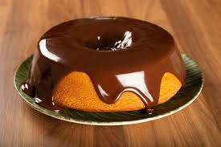
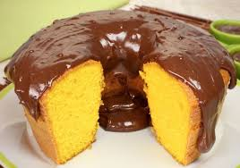

Ingredientes
- An item
- A second item
- A third item
- A fourth item
- And a fifth one
Modo de preparo
- An item
- A second item
- A third item
- A fourth item
- And a fifth one
Dicas
Para fazer seu bolo de cenoura de liquidificador de uma vez só é preciso um liquidificador potente, mas se achar a massa pesada para o seu aparelho, corte a cenoura em pedaços bem pequenos e só bata no aparelho os ingredientes úmidos. Depois que estiver tudo homogêneo, incorpore a mistura líquida aos ingredientes secos, mexendo bem e delicadamente. Além de poupar o seu liquidificador, misturar os ingredientes secos delicadamente com a mão também é o segredo para o seu bolo de cenoura não solar.